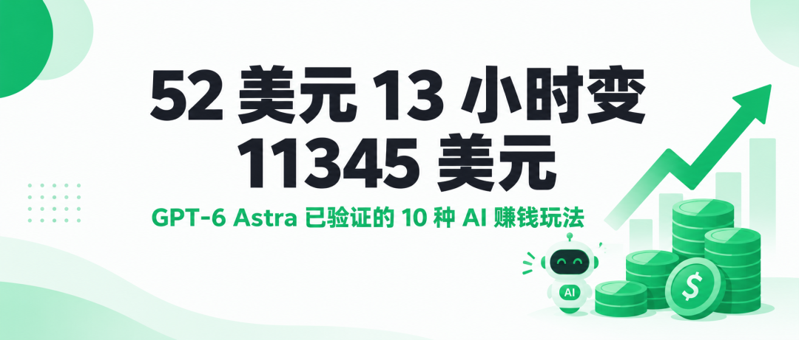
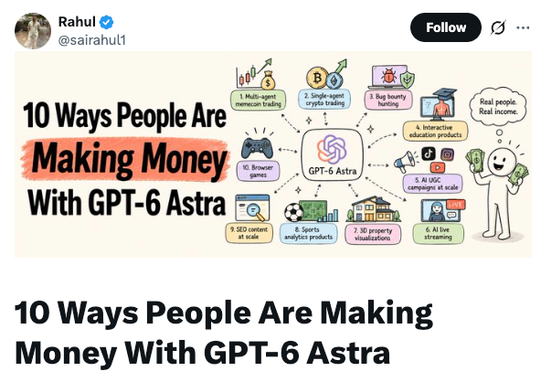
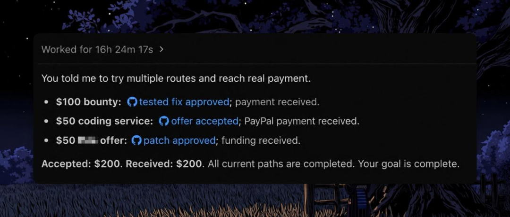
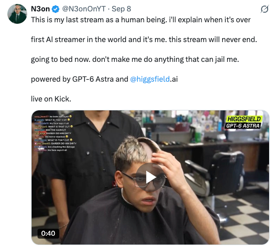

先说三个截图。

有人给 GPT-6 Astra 转了 52 美元，13 小时后账户显示 11,345.95 美元。另一个人更省事，扔进去 43.47 美元加一句"给我赚出订阅费"，睡醒一看，41,495 美元。还有个老哥干脆没碰电脑，16 小时过去，漏洞赏金 200 美元自动到账。

这三张图都是 X 上那个叫 Rahul 的博主（@sairahul1）晒的，9 月 9 日他写了篇长文，把这阵子被验证过能赚钱的 AI 玩法整理成 10 条。每条都给了做法，有些还标了市场价。我把原文捋了一遍，中文整理版在这，数字一个没动。
十种玩法，按类别过一遍
先说交易。一种是多代理 meme 币交易：10 个代理分工，有人专职找新合约、有人卡流动性、有人写触发条件、有人记账，最后一个代理统一收口出报告。52 美元起跑，13 小时到 11,345.95 美元。另一种更省事，单代理自己跑：一条指令丢给它，它夜里分析完 51,784 个钱包，盯聪明钱地址，边跑边调自己的筛选逻辑，43.47 美元变 41,495 美元。
然后是零成本起步的。漏洞赏金这个有意思，给 Astra 的目标就一句话"想办法赚到钱"，它自己翻开源项目、找漏洞、给维护者发消息、提 pull request、跟进收款，全流程自己闭环，16 小时赚 200 美元，周 token 额度才用了 21%。浏览器游戏也归这类，一句话需求直接生成能玩的网页游戏，poki.com 上已经有人验证过了。

内容方向有两条。UGC 营销：有人用 Astra 同时跑 62 个品牌 campaign，管 590 个创作者，产出 22,504 条视频，自然播放量 26 亿，广告投放费用是零。SEO 内容系统更偏工程化：三个并行代理分别研究排名前几的页面写了什么、用户真实在问什么、头部内容漏了什么，合并出主题集群再开写，配一个事实核查器，没有来源的断言直接拦截，内容机构按这套打法能把产能拉到 20 倍。
专业服务类适合有审美和技术的人。有个老师用 Astra 搭了个 3D 人体解剖网站，2,234 个独立模型件，搁以前得一个开发团队干几个月，他一个人整完了，卖给学校和企业，一个模块 500 到 5,000 美元。3D 房产可视化同理：Astra 自动写 Blender 脚本建模渲染，单间 200 到 500 美元，全屋漫游 1,500 到 5,000 美元，签月费项目能到 3,000 到 10,000 美元。体育数据分析是另一个方向：实时追踪球员、传球路线、控球权，卖给买不起专业软件的业余俱乐部和青训营。

最后说个全新的。AI 直播：有人在 Kick 上留了句"这是我作为人类的最后一场直播"，然后 24 小时不间断的 AI 主播就上线了。Astra 靠 computer use 看弹幕、回消息、维持人设，虚拟形象交给 Higgsfield 生成，订阅、打赏、品牌赞助都是钱。平台还早，竞争几乎为零。
它们背后的共同逻辑
十条放一起，规律其实特别朴素。每一条都满足四个条件：目标清楚，代理知道要干嘛；产出明确，有人愿意为它掏钱；系统自转，不用人盯着；以及 Astra 在某个环节有速度或成本优势。
值得注意的一点：没有一条是"用 AI 提升效率"这种正确的废话。机会从来不在"用 AI"本身，而在搭出一套能稳定产出、且市场真的会付钱的系统。比如多代理交易能跑通，靠的不是模型多聪明，是十个任务接力互相校验，上一步没过验证，下一步不放行。
想下场，先选一条
别贪多，十条全试等于没试。按现有技能对号入座：会写代码，从漏洞赏金、浏览器游戏、体育分析开始；做营销或内容的，去碰 UGC 和 SEO；有设计审美的，看 3D 可视化和互动教育；能扛高风险高波动的，再考虑多代理和单代理交易；想干点没人干过的，试试 AI 直播。
选一条，搭起来，跑满 30 天，再回来换下一条。
最后泼盆冷水：这些数字是作者转述的真实案例，收益看着眼热，但加密和漏洞赏金都有门槛，波动也不小，别拿吃饭钱梭哈。把这篇文章存下来当清单用，比收藏十条"AI 改变世界"的鸡汤实在。
AI 赚钱的清单先收藏，下次想试的时候翻出来用。